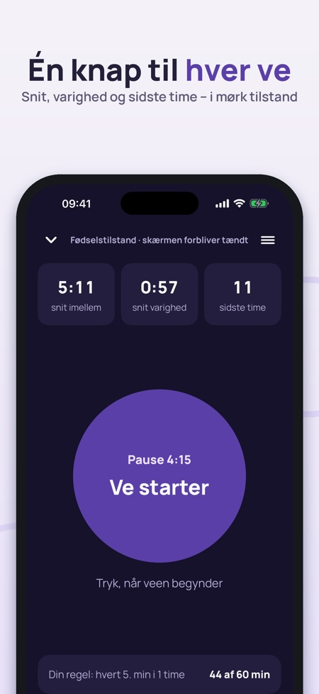
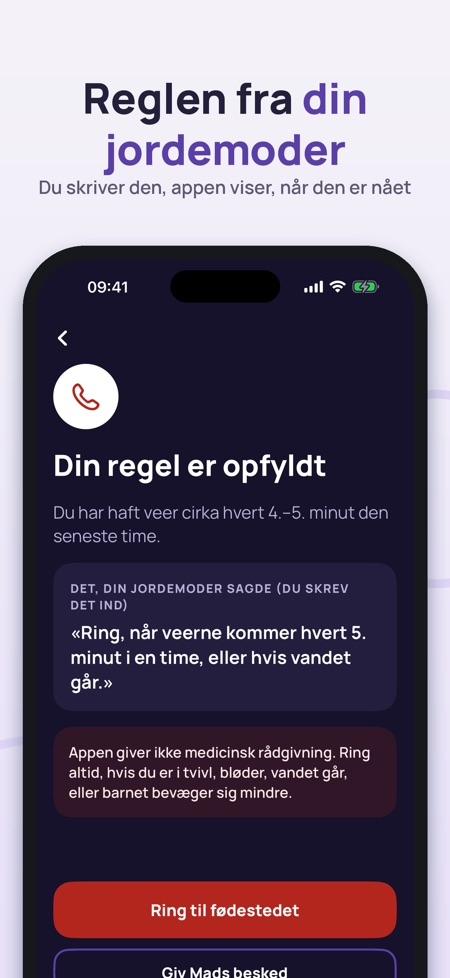
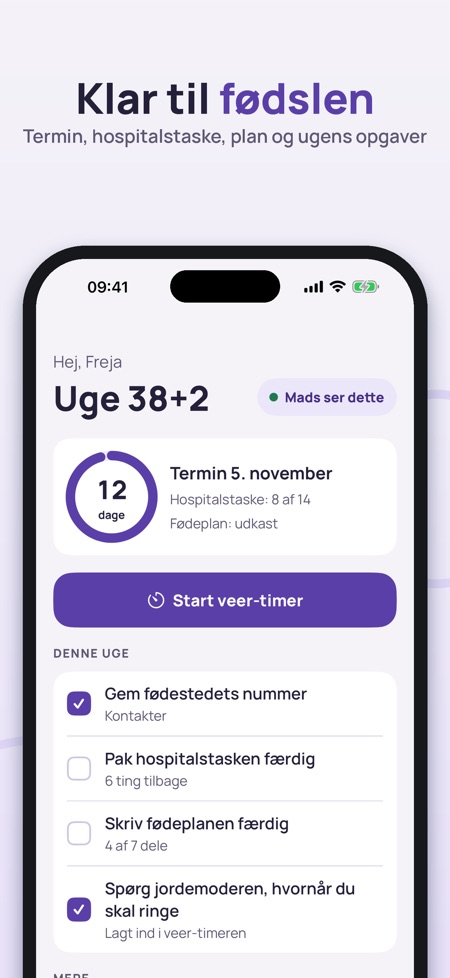

Hospitalstaske og fødeplan. Veer-timer med én stor knap, din jordemoders regel, hospitalstaske og fødeplan – din partner ser det samme via iCloud. Appen fører log, den giver ikke medicinske råd.



Fødselsklar samler det, du har brug for på fødselsdagen: en veer-timer med én stor knap, hospitalstasken, fødeplanen og de numre, du skal ringe til – og din partner kan se det samme.
VEER-TIMER (FØDSELSTILSTAND)
• Én stor knap: tryk, når veen starter, og når den er ovre
• Snit imellem veerne, snit varighed og antal veer den sidste time
• Mørk skærm, der forbliver tændt, store tal og vibration ved hvert tryk
• Fortsætter korrekt, når telefonen er låst, appen lukkes, eller skærmen slukker
• Låseskærm og Dynamic Island viser veen eller pausen, med en knap til næste ve
• Historik med diagram og tabel – del som tekst med jordemoderen eller din partner
DIN REGEL FRA JORDEMODEREN
Skriv det, jordemoderen eller fødestedet sagde, for eksempel »ring, når veerne kommer hvert 5. minut i en time«. Appen viser, hvor langt du er nået, og fremhæver, når dine tal er nået, sammen med en stor knap til at ringe til fødestedet. Appen foreslår ingen tal selv og bestemmer ikke, hvornår du skal af sted.
HOSPITALSTASKE
• Færdig liste til Danmark med vandrejournal eller Min Graviditet-appen og sundhedskort øverst
• Tre faner: mig, baby og partner – tilføj og fjern ting
• Din partner kan krydse af fra sin egen telefon
FØDEPLAN
• Syv dele: smertelindring, hvem er med, stillinger, lige efter fødslen, navlestreng, mad til barnet, billeder og stemning
• Vælg ønsker med ét tryk, og skriv dine egne noter
• Lav en PDF på dansk, som du kan printe eller vise frem
PARTNER
Del via iCloud, uden konto. Din partner ser status for veerne, hospitalstasken, planen og kontakterne, med »opdateret for … siden«, så intet ser nyere ud, end det er. Du vælger selv, hvad der deles. Beskeden »Veerne er gået i gang – kom hjem« sendes kun, når du trykker.
KONTAKTER
Store knapper til fødestedet, jordemoderen, din partner og taxa. Numrene skriver du selv. Alarmnummeret 112 står altid nederst.
LIV OG BEVÆGELSER
En enkel dagbog uden normalværdier. Øverst står altid rådet om at ringe til fødestedet, hvis barnet bevæger sig mindre.
DE FØRSTE UGER
Offentlige trin efter fødslen i Danmark, Norge eller Finland, med link til kilden: omsorgserklæring, hælprøve, sundhedsplejerske, navngivning, barselsdagpenge og pas.
PRIS
Veer-timeren, historikken, hospitalstasken og kontakterne kan bruges uden køb – også på fødselsdagen. Deling med partner, PDF af fødeplanen, bevægelsesdagbogen, de første uger og eksport af historikken låses op med et engangskøb. Intet abonnement.
VIGTIGT
Fødselsklar fører log og hjælper dig med at huske. Appen giver ikke medicinsk rådgivning og stiller ingen diagnose. Følg rådene fra jordemoderen og fødestedet, og ring til dem, hvis du er i tvivl. Teksterne linker til kilderne: sundhed.dk, borger.dk, helsenorge.no og terveyskylä.fi.
Privatliv: det, du skriver, gemmes på telefonen og, hvis du deler, i din egen iCloud. Anonym brugsstatistik (hvilke skærme der bruges, aldrig helbredsoplysninger) kan slås fra i indstillingerne.